R4DS の以下を mosaic を使って再現する.
http://r4ds.had.co.nz/many-models.html#gapminder
library(tidyverse)
library(mosaic)
library(gapminder)
library(modelr)gapminder
summary(gapminder)## country continent year lifeExp
## Afghanistan: 12 Africa :624 Min. :1952 Min. :23.60
## Albania : 12 Americas:300 1st Qu.:1966 1st Qu.:48.20
## Algeria : 12 Asia :396 Median :1980 Median :60.71
## Angola : 12 Europe :360 Mean :1980 Mean :59.47
## Argentina : 12 Oceania : 24 3rd Qu.:1993 3rd Qu.:70.85
## Australia : 12 Max. :2007 Max. :82.60
## (Other) :1632
## pop gdpPercap
## Min. :6.001e+04 Min. : 241.2
## 1st Qu.:2.794e+06 1st Qu.: 1202.1
## Median :7.024e+06 Median : 3531.8
## Mean :2.960e+07 Mean : 7215.3
## 3rd Qu.:1.959e+07 3rd Qu.: 9325.5
## Max. :1.319e+09 Max. :113523.1
## gapminder %>% gf_line(lifeExp~year, group=~country, color=~continent) 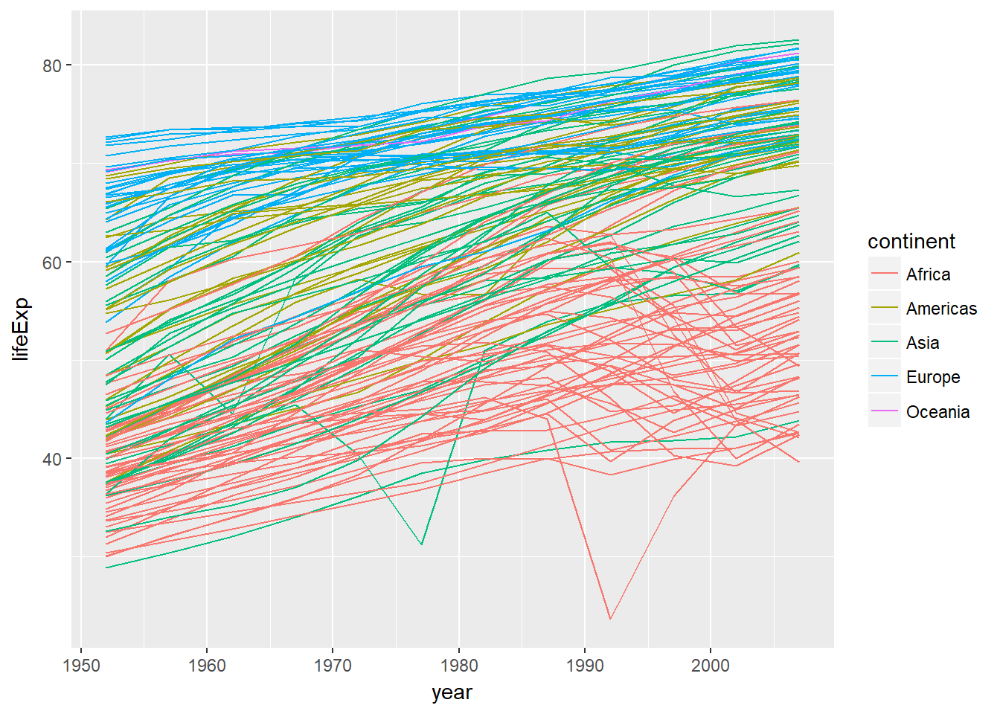
gapminder %>% gf_line(lifeExp~year |continent, group=~country, color=~continent) 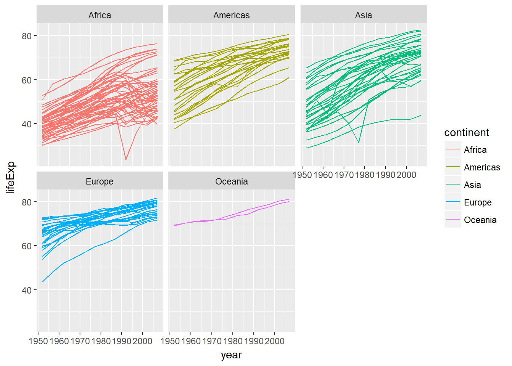
Japan
日本について見る.
jp <- gapminder %>% filter(country == "Japan")jp %>% gf_line(lifeExp ~year) %>% gf_labs(title="Full data")
jp_mod <- lm(lifeExp ~ year, data= jp)
jp %>% add_predictions(jp_mod) %>%
gf_line(pred ~year) %>% gf_labs(title="Linear trend")
jp %>% add_residuals(jp_mod) %>%
gf_line(resid ~year) %>% gf_labs(title="Remaining pattern")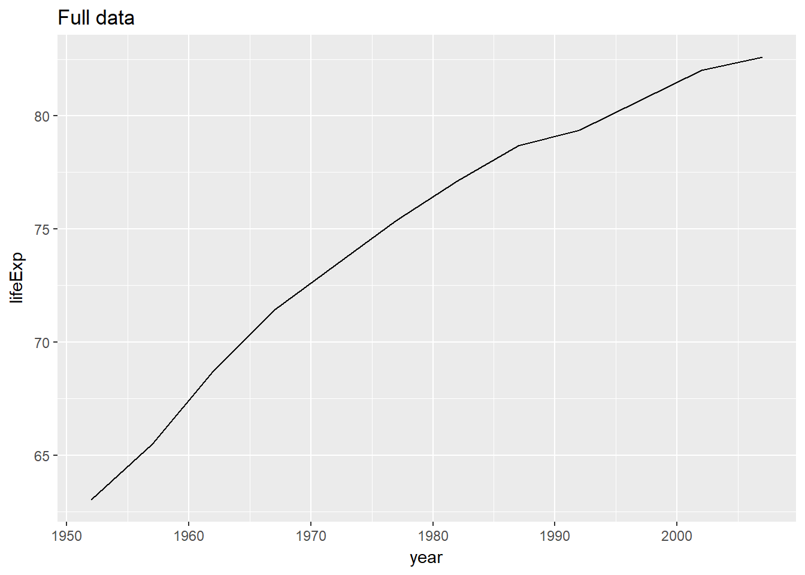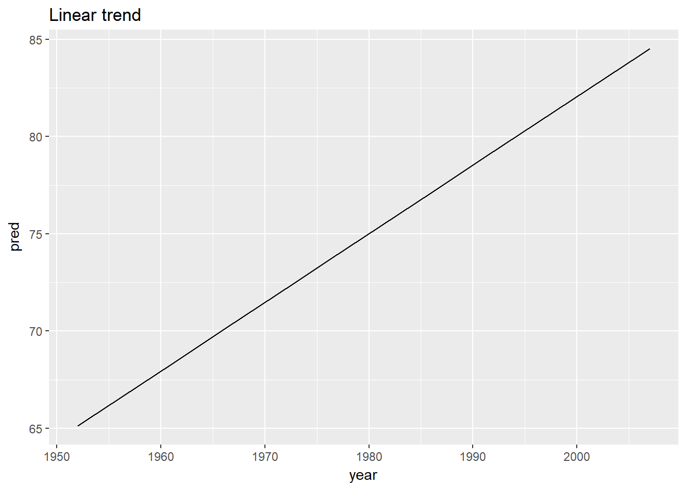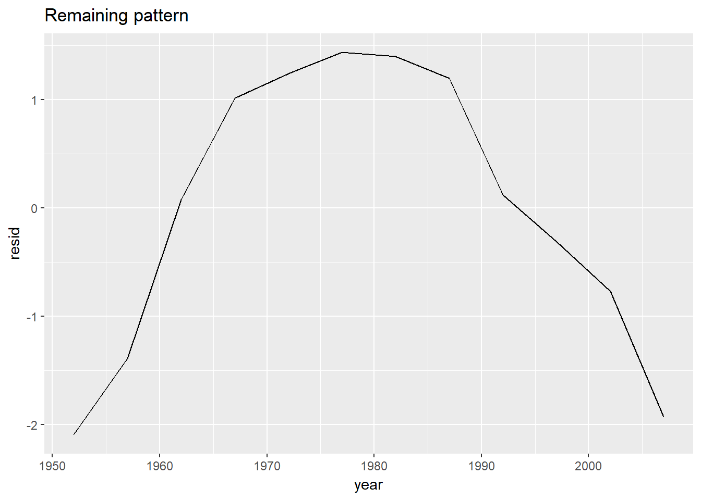
nested dataframe
by_country <- gapminder %>% nest(-country, -continent)
head(by_country)## # A tibble: 6 x 3
## country continent data
## <fctr> <fctr> <list>
## 1 Afghanistan Asia <tibble [12 x 4]>
## 2 Albania Europe <tibble [12 x 4]>
## 3 Algeria Africa <tibble [12 x 4]>
## 4 Angola Africa <tibble [12 x 4]>
## 5 Argentina Americas <tibble [12 x 4]>
## 6 Australia Oceania <tibble [12 x 4]>国ごとの回帰モデルの結果を加える.
by_country <- by_country %>%
dplyr::mutate(model = purrr::map(data, ~ lm(lifeExp ~ year, data = .)))国ごとの回帰モデルの結果を加える.
by_country <- by_country %>%
dplyr::mutate(resids = purrr::map2(data, model, modelr::add_residuals))国ごとの残差を図示する.
resids <- unnest(by_country, resids)
resids %>% gf_line(resid~year, group=~country, color=~continent)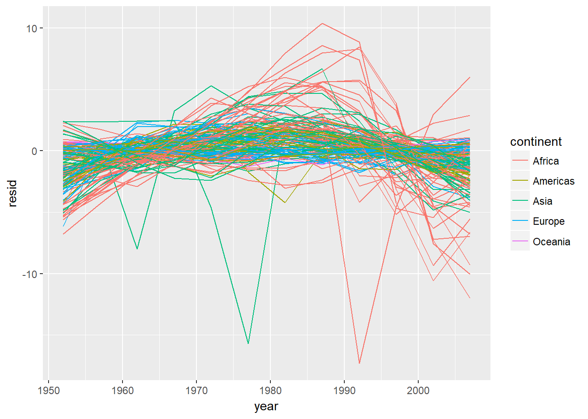
大陸ごとに分ける
resids %>% gf_line(resid~year|continent, group=~country, color=~continent)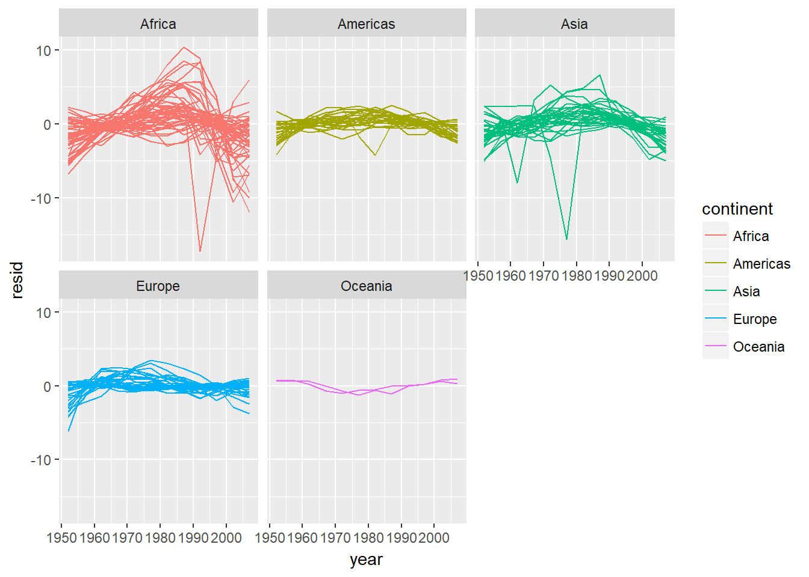
国ごとの調整済み決定係数を見る.
by_country <- by_country %>%
mutate(glance = map(model, broom::glance))
glance <- unnest(by_country, glance, .drop = TRUE)
glance %>% arrange(r.squared)## # A tibble: 142 x 13
## count~ cont~ r.squ~ adj.r.s~ sigma stat~ p.val~ df logL~ AIC BIC
## <fctr> <fct> <dbl> <dbl> <dbl> <dbl> <dbl> <int> <dbl> <dbl> <dbl>
## 1 Rwanda Afri~ 0.0172 -0.0811 6.56 0.175 0.685 2 -38.5 83.0 84.5
## 2 Botsw~ Afri~ 0.0340 -0.0626 6.11 0.352 0.566 2 -37.7 81.3 82.8
## 3 Zimba~ Afri~ 0.0562 -0.0381 7.21 0.596 0.458 2 -39.6 85.3 86.7
## 4 Zambia Afri~ 0.0598 -0.0342 4.53 0.636 0.444 2 -34.1 74.1 75.6
## 5 Swazi~ Afri~ 0.0682 -0.0250 6.64 0.732 0.412 2 -38.7 83.3 84.8
## 6 Lesot~ Afri~ 0.0849 -0.00666 5.93 0.927 0.358 2 -37.3 80.6 82.1
## 7 Cote ~ Afri~ 0.283 0.212 3.93 3.95 0.0748 2 -32.3 70.7 72.1
## 8 South~ Afri~ 0.312 0.244 4.74 4.54 0.0588 2 -34.6 75.2 76.7
## 9 Uganda Afri~ 0.342 0.276 3.19 5.20 0.0457 2 -29.8 65.7 67.1
## 10 Congo~ Afri~ 0.348 0.283 2.43 5.34 0.0434 2 -26.6 59.2 60.6
## # ... with 132 more rows, and 2 more variables: deviance <dbl>,
## # df.residual <int>決定係数が悪いものを表示する.
bad_fit <- filter(glance, r.squared<0.25)
gapminder %>% semi_join(bad_fit, by ="country") %>%
gf_line(lifeExp ~ year, color =~country)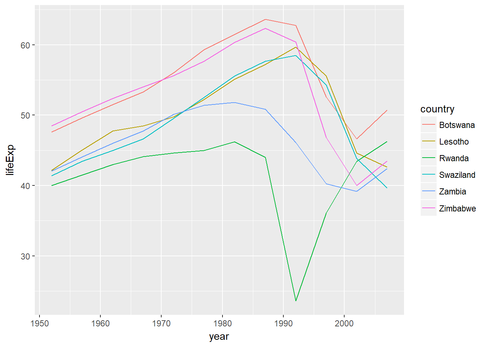
おまけ
係数の結果を表として取り出す.
coef <- by_country %>% unnest(model %>% purrr::map(broom::tidy))by_country <- by_country %>% mutate(coef = map(model, broom::tidy))
coef <- by_country %>% unnest(coef, .drop=TRUE)
coef## # A tibble: 284 x 7
## country continent term estimate std.error statis~ p.value
## <fctr> <fctr> <chr> <dbl> <dbl> <dbl> <dbl>
## 1 Afghanistan Asia (Intercept) - 508 40.5 -12.5 1.93e- 7
## 2 Afghanistan Asia year 0.275 0.0205 13.5 9.84e- 8
## 3 Albania Europe (Intercept) - 594 65.7 - 9.05 3.94e- 6
## 4 Albania Europe year 0.335 0.0332 10.1 1.46e- 6
## 5 Algeria Africa (Intercept) -1068 43.8 -24.4 3.07e-10
## 6 Algeria Africa year 0.569 0.0221 25.7 1.81e-10
## 7 Angola Africa (Intercept) - 377 46.6 - 8.08 1.08e- 5
## 8 Angola Africa year 0.209 0.0235 8.90 4.59e- 6
## 9 Argentina Americas (Intercept) - 390 9.68 -40.3 2.14e-12
## 10 Argentina Americas year 0.232 0.00489 47.4 4.22e-13
## # ... with 274 more rows# coef <- by_country %>% unnest(model %>% purrr::map(broom::tidy))回帰係数の傾きをみる. P値が悪いのは決定係数が悪いのとほぼ同じである.
coef_year <- filter(coef, term=="year")
coef_year %>% arrange(desc(p.value)) %>% head()## # A tibble: 6 x 7
## country continent term estimate std.error statistic p.value
## <fctr> <fctr> <chr> <dbl> <dbl> <dbl> <dbl>
## 1 Rwanda Africa year -0.0458 0.110 -0.418 0.685
## 2 Botswana Africa year 0.0607 0.102 0.593 0.566
## 3 Zimbabwe Africa year -0.0930 0.121 -0.772 0.458
## 4 Zambia Africa year -0.0604 0.0757 -0.798 0.444
## 5 Swaziland Africa year 0.0951 0.111 0.856 0.412
## 6 Lesotho Africa year 0.0956 0.0992 0.963 0.358全体の分布をみる.
coef_year %>% gf_density(~estimate)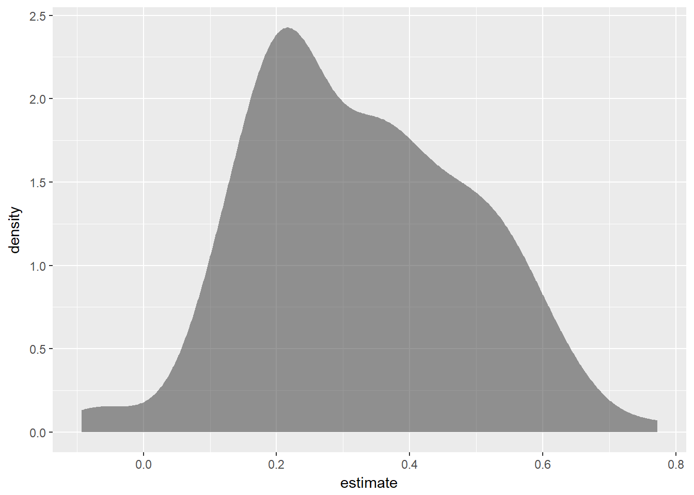
大陸ごとの分布をみる.
coef_year %>% gf_density(~estimate, group=~continent,color=~continent)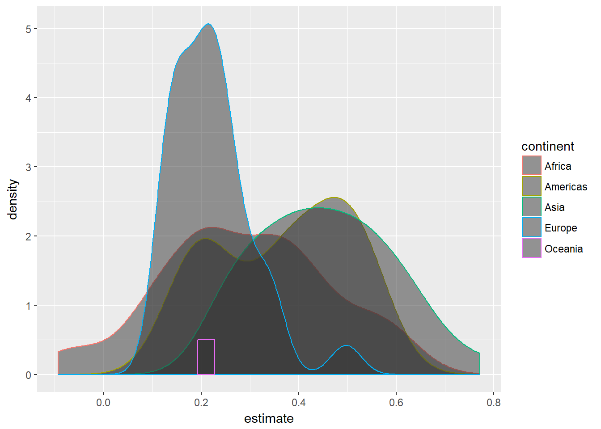
パネルごとにみる.
coef_year %>% gf_density(~estimate|continent,color=~continent)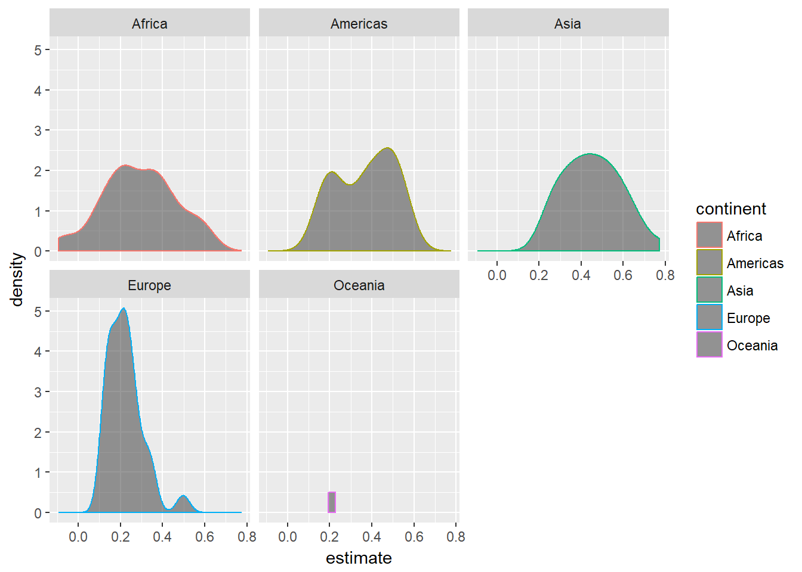
箱ひげ図でみる.
coef_year %>% gf_boxplot(estimate~continent,color=~continent)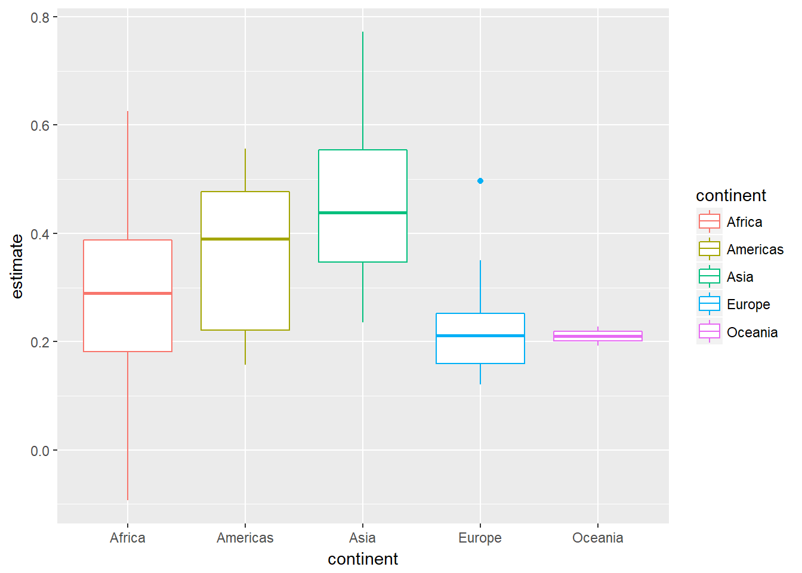
表にまとめる.
coef_year %>% group_by(continent) %>%
summarize(mean=mean(estimate),
sd = sd(estimate))## # A tibble: 5 x 3
## continent mean sd
## <fctr> <dbl> <dbl>
## 1 Africa 0.290 0.171
## 2 Americas 0.368 0.135
## 3 Asia 0.453 0.137
## 4 Europe 0.222 0.0830
## 5 Oceania 0.210 0.0247係数が負の国は以下の3つであるが, どれもP値は高い.
coef_year %>% filter(estimate<0) %>%
select(country, estimate, p.value)## # A tibble: 3 x 3
## country estimate p.value
## <fctr> <dbl> <dbl>
## 1 Rwanda -0.0458 0.685
## 2 Zambia -0.0604 0.444
## 3 Zimbabwe -0.0930 0.458